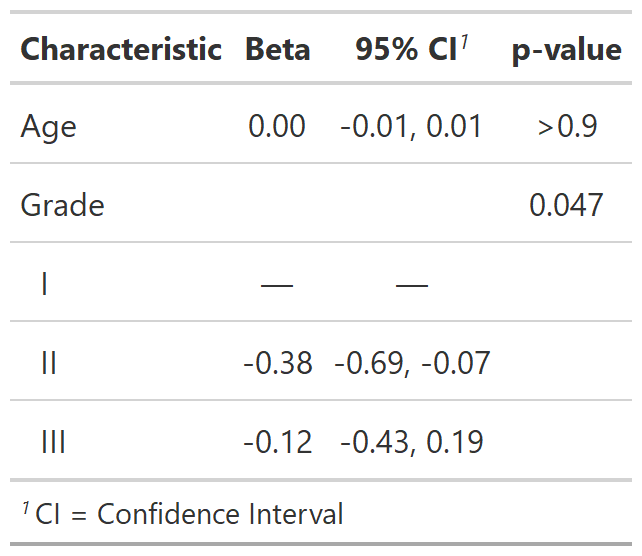
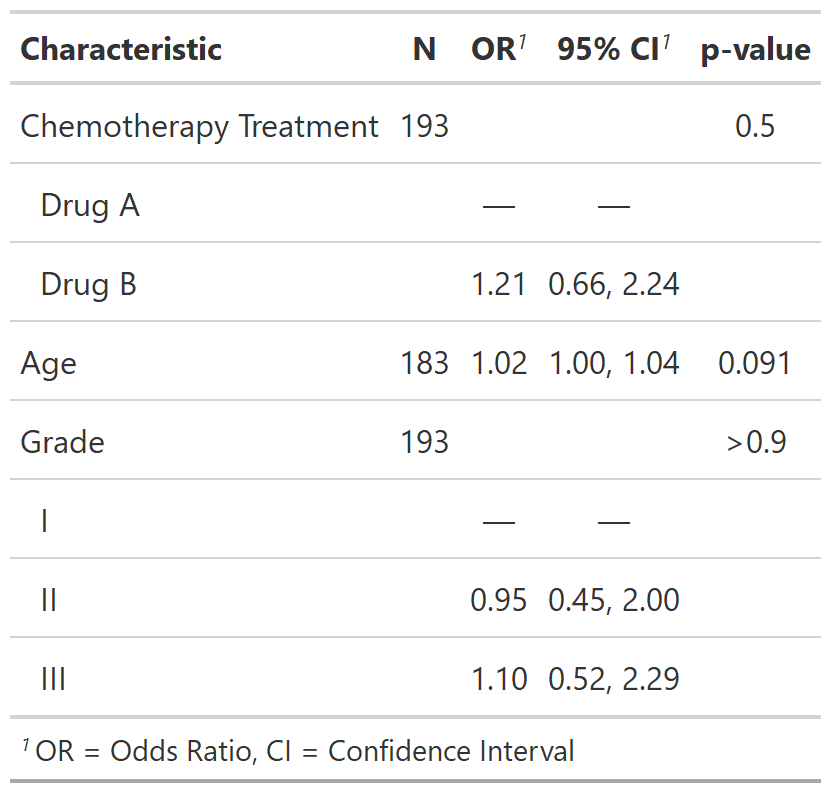

| add_global_p {gtsummary} | R Documentation |
This function uses car::Anova(type = "III") to calculate global p-values variables.
Output from tbl_regression and tbl_uvregression objects supported.
add_global_p(x, ...) ## S3 method for class 'tbl_regression' add_global_p( x, include = everything(), type = NULL, keep = FALSE, quiet = NULL, ..., terms = NULL ) ## S3 method for class 'tbl_uvregression' add_global_p( x, type = NULL, include = everything(), keep = FALSE, quiet = NULL, ... )
x |
Object with class |
... |
Additional arguments to be passed to |
include |
Variables to calculate global p-value for. Input may be a vector of
quoted or unquoted variable names. Default is |
type |
Type argument passed to |
keep |
Logical argument indicating whether to also retain the individual
p-values in the table output for each level of the categorical variable.
Default is |
quiet |
Logical indicating whether to print messages in console. Default is
|
terms |
DEPRECATED. Use |
Example 1

Example 2

Daniel D. Sjoberg
Other tbl_uvregression tools:
add_q(),
bold_italicize_labels_levels,
inline_text.tbl_uvregression(),
modify,
tbl_merge(),
tbl_stack(),
tbl_uvregression()
Other tbl_regression tools:
add_q(),
bold_italicize_labels_levels,
combine_terms(),
inline_text.tbl_regression(),
modify,
tbl_merge(),
tbl_regression(),
tbl_stack()
# Example 1 ----------------------------------
if (requireNamespace("car")) {
tbl_lm_global_ex1 <-
lm(marker ~ age + grade, trial) %>%
tbl_regression() %>%
add_global_p()
}
# Example 2 ----------------------------------
if (requireNamespace("car")) {
tbl_uv_global_ex2 <-
trial[c("response", "trt", "age", "grade")] %>%
tbl_uvregression(
method = glm,
y = response,
method.args = list(family = binomial),
exponentiate = TRUE
) %>%
add_global_p()
}